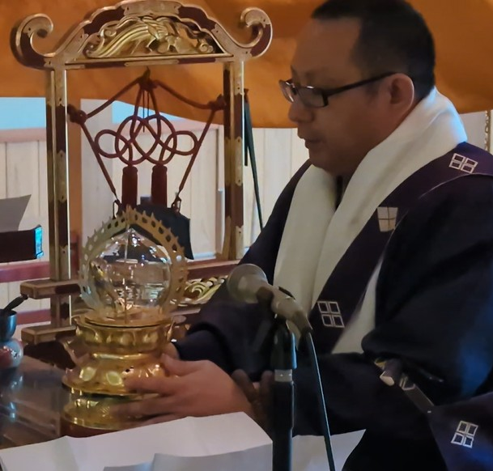

10月の言葉
自分を苦しめず
また他人を害しないことばのみを語れ
これこそ実に
善く説かれたことばなのである
また他人を害しないことばのみを語れ
これこそ実に
善く説かれたことばなのである
中村元訳『ブッダのことば』
清水寺通信
2025年10月号
| 10月 | 行事予定 |
|---|---|
| 11日 | 稲荷社ご縁日 |
| 17日 | 観音様ご縁日 |
| 18日 | 萬燈会 |
| 19日 | 光明真言会 （諷誦法要） |
| 11月 | 行事予定 |
|---|---|
| 11日 | もっこ祭り |
| 17日 | 観音様ご縁日 |
御仏の教え
今月は『スッタニパータ』「大なる章」の「みごとに説かれたこと」から聖句を選びました。
ご覧の通り、ここでは「ことば」について説かれています。これまでにも何度か「身口意の三業」を紹介してきましたが、その中にも「口業（くごう）」として、「ことば」が取り上げられており、仏教の「ことば」へ対する関心度の高さを伺うことができます。
さて、「ことば」には意思や情報を伝達するための道具としての側面がありますが、それゆえに、使い方次第では相手だけでなく自分をも傷つけるものにもなりえます。仏教はこのことを経験的にも認識しており、ことばに関する教えが至る所で散見されます。例えば「偽りをかたるな」、「悪口をいうな」、「荒々しいことばをつかうな」が比較的知られているものです。偽りを伝えられた人は、間違った知識を得てしまったがゆえに判断を誤ることが考えられます。また、悪口・荒々しいことばを言われた人は相手に嫌悪感や敵対心などを抱きかねません。どちらも人間関係を悪化させる可能性があり、その報いが自分に返ってくることも考えられます。
人間は多くの人と関わりあいながら生きていきます。現実であれ、ネット上であれ、殺伐とした環境で過ごす人々に心の安らぎが訪れるべくもありません。自分自身が穏やかに過ごすためにも、ことばの使い方には気をつけたいものです。
清水寺からのお知らせ
安来清水寺千年の伝統を誇る
光明真言会 （諷誦）
令和7年度
法要日程
法要日程

| 日時 | 10月19日 |
| 開堂 | 13時 |
| 法要開始 | 14時 |
1150年前に慈覚大師円仁が伝え光明真言の秘法により亡者生前の一切の罪を消し、極楽浄土へお送りする法要です。
| 供養冥加料 | |
|---|---|
| 元諷誦 | 5000円 |
| 添え諷誦 | 3000円 |
法要前日まで受け付け
お申込みは本堂受付までお越しください
蓮乗院からのお知らせ
11月11日（月） 午前10時より
清水寺稲荷社大祭
もっこ祭り
鳥居奉納
くぐり初め

 やきみかん
やきみかん霊山寺からのお知らせ

薬師護摩供養祭
毎月８日
午後２時より
午後２時より
お問い合わせは
TEL:0854-22-2151
清水寺まで
TEL:0854-22-2151
清水寺まで